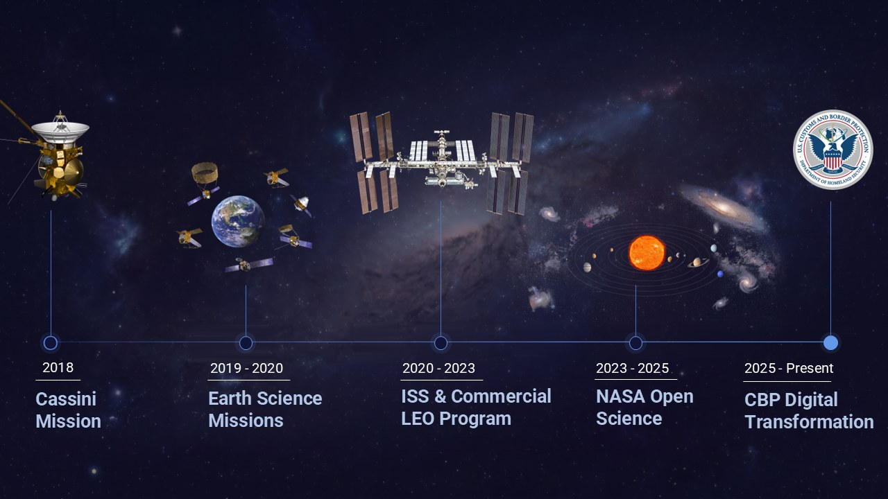

Turning Earth’s Vital Signs into Stories
Mission and technology decks for JPL-managed Earth science missions, published for download on JPL's Earth Science site.
- Presentations
- Multimedia
- Copywriting

Who I am
I’m a Strategic Communications Specialist with a passion for turning complex topics into clear, visually compelling stories that the public can understand and leaders can act on. I bridge the technical and non-technical because behind every number and dataset is a mission impact story that matters.
I’ve carried this passion through every stage of my career: from teaching high school math, to telling science and space mission stories like the Cassini mission to Saturn, Earth science missions, the International Space Station and Commercial LEO Program, and NASA’s open science and AI work. Today, I bring the same passion to telling the story of how digital transformation gives time back to the mission and improves service delivery at U.S. Customs and Border Protection.
My path

Presentations
Mission decks for JPL Earth science and executive briefings for NASA and CBP leaders.
Reports
Annual reports that show what a program delivered, from NASA's Office of the Chief Science Data Officer to CBP's Digital Transformation Office.
Web · UX · Video
Usability testing and an event calendar for the Cassini archive, cbp.gov page redesigns in Drupal, and short videos made with AI tools.
Featured work
Mission and technology decks for JPL-managed Earth science missions, published for download on JPL's Earth Science site.
Conducted usability testing and redesigned the PDS Cassini Mission Archive web pages and the Event Calendar (data repository for Cassini).
Executive communications and technical writing for the International Space Station (ISS) and Commercial Low-Earth Orbit (LEO) program for NASA Headquarters.